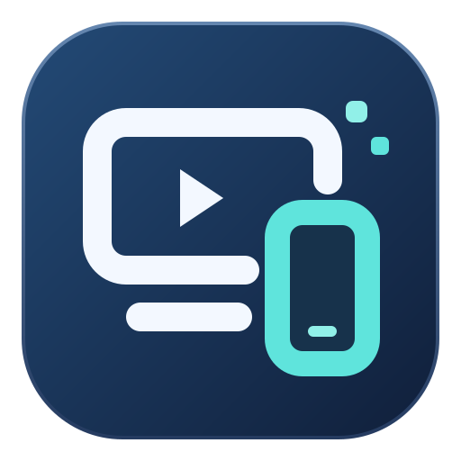

Open About phone
Go to Settings → About phone. On Samsung, also open Software information.

OmniCastUSB, Wi‑Fi, and mirror events from this computer.
Use a USB data cable or pair over the local network. An internet connection is optional.
Go to Settings → About phone. On Samsung, also open Software information.
Tap Build number seven times. Enter the phone PIN if Android asks.
Go to Settings → System → Developer options. Some phones list it directly in Settings.
If a Windows PC needs a driver, use your phone maker’s USB driver. On Linux, make sure your user has USB access through the Android udev rules.
If pairing succeeds and the phone does not appear, use Connect with the other address on the main Wireless debugging screen.
Defaults apply the next time a mirror opens.
Select an authorized Android connection to open its shell.
Open an interactive shell on the selected phone. Use Ctrl+C to interrupt or type exit to close.
These actions use the selected, authorized USB or Wi‑Fi connection. Wake shows the lock screen if Android is locked.
Commands starting with adb run in your computer terminal. In Device terminal, type the command after adb shell.